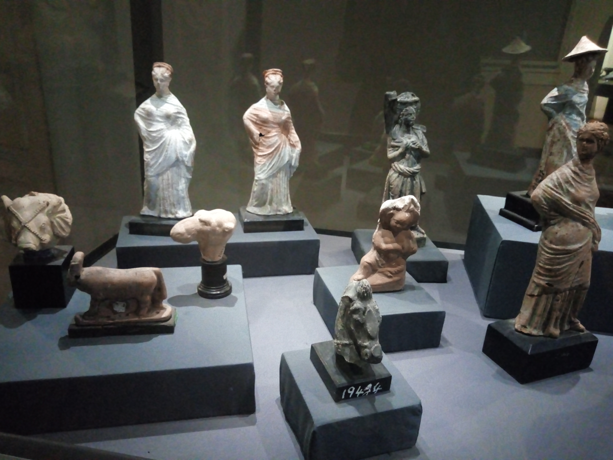
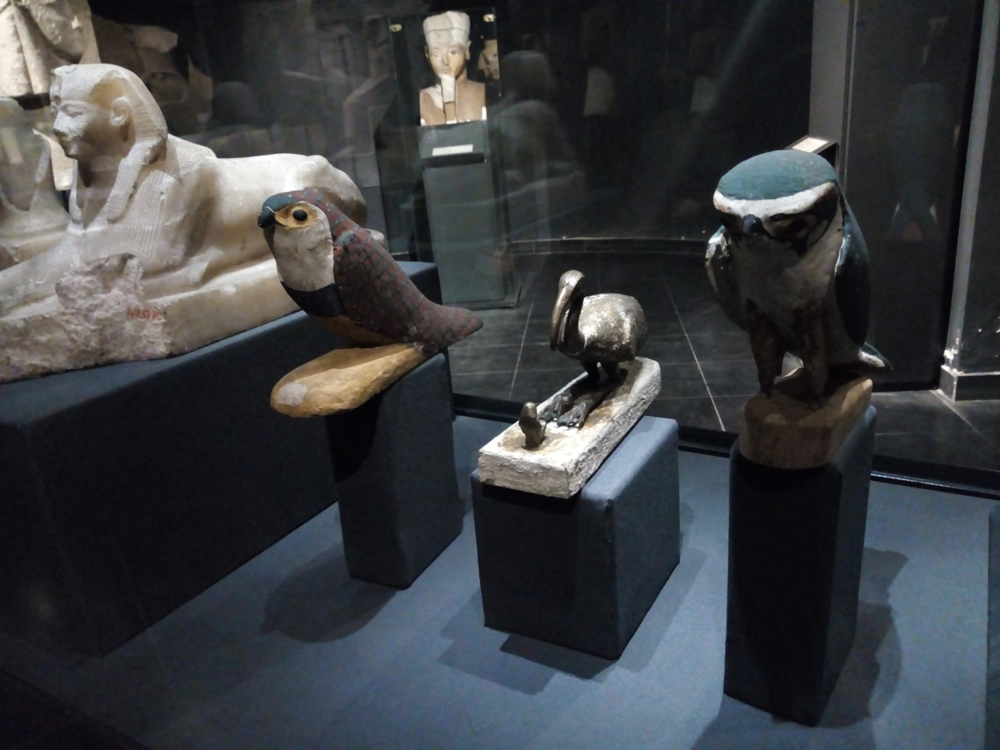
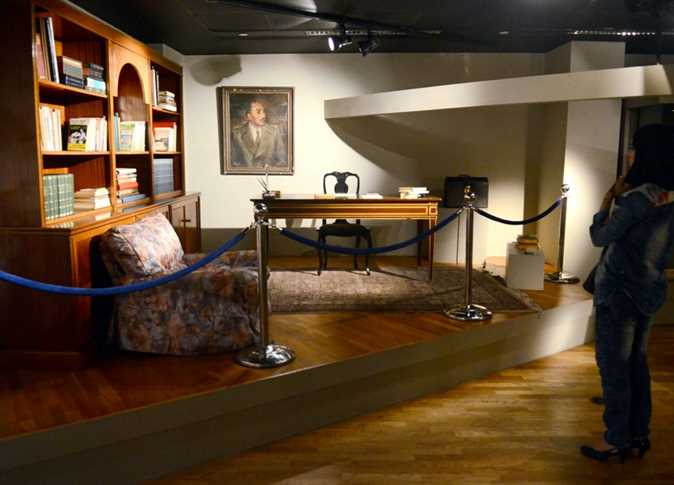
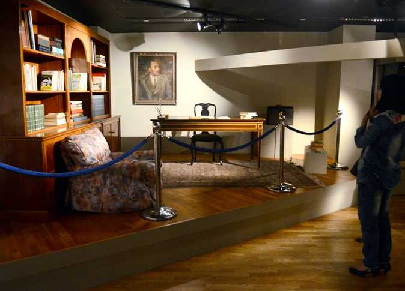
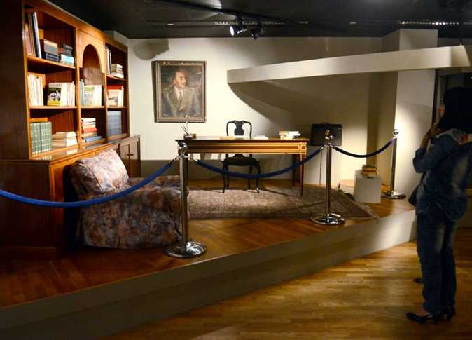
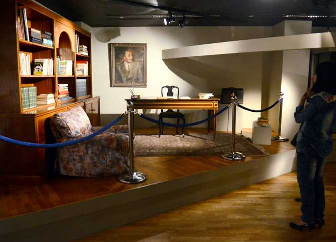

.jpg)


.jpg) 



متحف الاسكندرية القومي كان قصر لاحد اثرياء الاسكندرية وهو تاجر الاخشاب اسعد باسيلي والذي بنى هذا القصر على الطراز الايطالي وظل مقيما به حتى عام 1954 ثم باعه للسفارة الامريكية . وظل هذا القصر مقرا للقنصلية الامريكية حتى اشتراه المجلس الاعلى للاثار التابع لوزارة الثقافة عام 1996 ثم قام بترميمه وتجديده وتحويله الى متحف مع بداية الالفية الثالثة و تم افتتاحه المتحف فى سبتمبر 2003. ومتحف الاسكندرية القومي يحتوي على 1800 قطعة اثرية تشمل جميع العصور بدءاً من الدولة القديمة وحتى العصر الحديث وتصور تلك القطع حضارة مصر وثقافتها وفنونها وصناعاتها خلال هذه العصور وقد تم احضار هذه القطع الاثرية من عدة متاحف منها المتحف المصري والمتحف الاسلامي والمتحف القبطي بالقاهرة والمتحف اليوناني الروماني والاثار الغارقة والاثار الاسلامية بالاسكندرية ومن اهم القطع الموجودة تمثال يمثل الكاتب المصري ومجموعة من الاواني عثر عليها بهرم الملك زوسر . اما عصر الدولة الحديثة فيعتبر ازهى العصور الفنية فقد جمع الفن في هذه الفترة بين واقعية مدرسة طيبة ومثالية مدرسة منف فنتج عن هذا اجمل القطع الفنية والتي يضم المتحف منها بعض القطع النادرة كراس للملكة حتشبسوت ورأس للملك اخناتون ومجموعة تماثيل لتحتمس الثالث الاله آمون والملك رمسيس الثاني. وينفرد متحف الاسكندرية القومي بعرض قاعة خاصة للاثار الغارقة وتضم مجموعة رائعة من الاثار الغارقة التي تم انتشالها ومن اهم القطع في هذا القسم ثمثال من الجرانيت الاسود لايزيس وتمثال لكاهن من كهنة ايزيس ومجموعة من التماثيل والبورتريهات الرخامية لبعض الهة الاغريق ومنها تمثال لفينوس الهة الحب ورأس للاسكندر الاكبر وغيرهم .